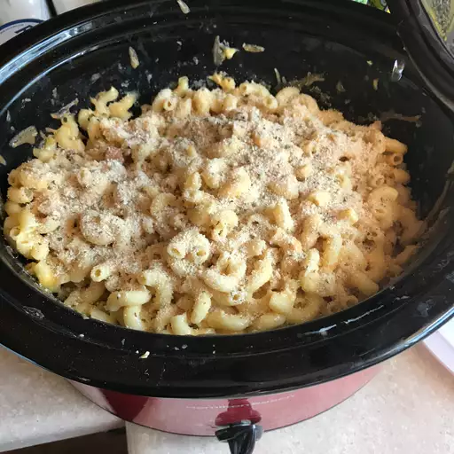

Mac and Cheese Recipe

Description
This crockpot mac and cheese recipe is creamy, comforting, and takes just moments to assemble in a slow cooker. Great for large family gatherings and to take to potluck dinners. It's always a big hit!
Ingredients
- 1 (16 ounce) package elbow macaroni
- ½ cup butter
- salt and ground black pepper to taste
- 1 (16 ounce) package shredded Cheddar cheese, divided
- 1 (5 ounce) can evaporated milk
- 2 eggs, well beaten
- 2 cups whole milk
- 1 (10.5 ounce) can condensed Cheddar cheese soup (such as Campbell's®)
- 1 pinch paprika, or as desired (Optional)
Steps
- Step 1
Fill a large pot with lightly salted water and bring to a rolling boil. Stir in macaroni and return to a boil. Cook pasta uncovered, stirring occasionally, until tender yet firm to the bite, about 8 minutes. Drain and transfer pasta to a slow cooker.
- Step 2
Add butter to pasta and stir until melted; season with salt and pepper. Sprinkle about 1/2 of the Cheddar cheese over pasta and stir.
- Step 3
Whisk evaporated milk and eggs together in a bowl until smooth; stir into pasta mixture.
- Step 4
Whisk milk and condensed soup together in a bowl until smooth; stir into pasta mixture.
- Step 5
Sprinkle remaining cheese over pasta mixture; garnish with paprika.
Tips
Some slow cookers take less time. Check the edges are not getting too brown after 2 1/2 hours.
To bake in a conventional oven, pour pasta mixture into a casserole dish and bake at 350 degrees F (175 degrees C) for 45 minutes to 1 hour.